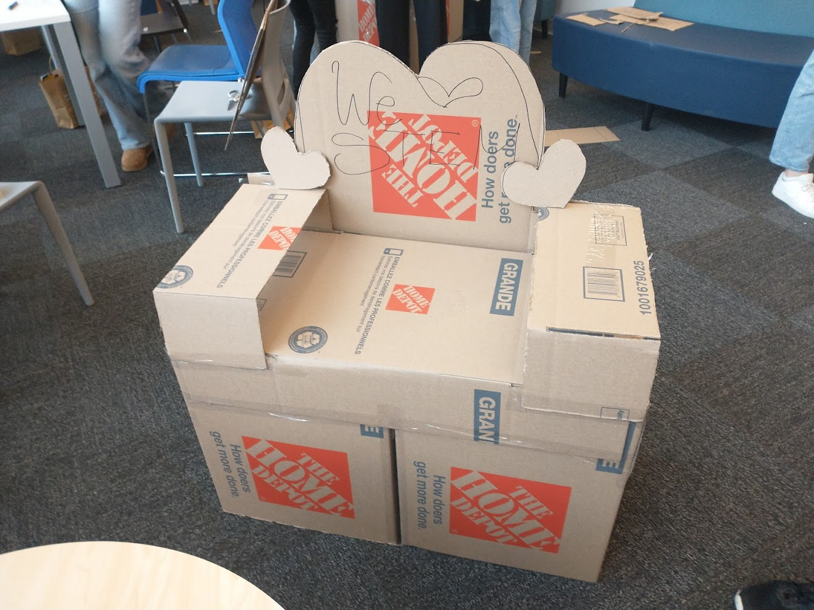

Academic Experience
-
Have taken:
- CSCI 1105: Intro to Computer Programming
- CSCI 1107: Social Computing
- CSCI 1120: Intro to Computer Systems
- CSCI 1300: Calculus in Computer Science
- ASSC 1800: Computing and Society in History
-
Am taking:
- CSCI 1110: Intro to Computer Science
- CSCI 1109: Practical Data Science
- CSCI 1170: Intro to Web Design and Development
- CSCI 1315: Discrete Math for Computer Science
- ASSC 1801: Case Studies in Computing
Work Experience
-
STEAM Mentor and Supervisor, Brilliant Labs (Jun 2023 - Present)
- Developed and implemented STEAM activities for youth and connected them to United Nations Sustainable Development Goals
- Worked with 10+ local organizations in order to cater to a diverse group of youths, prioritizing under-represented groups
- Supervisor for other Mentors in the HRM region, organized information and communicated with Program Specialist
-
Summer Intern, Department of Oceanography at Dalhousie University (Jul 2022 - Sep 2022)
- Developed classroom materials for grade school program "Adopt a Float" for the purpose of exposing young students to ocean science
- Learned from experts about ocean based carbon dioxide removal methods being developed
- Designed parts of the program website using HTML and CSS
Volunteer Experience
-
Volunteer, Dalhousie Student Union Food Bank (Jan 2024 - Present)
- Organize and manage the stock of produce, canned goods, frozen food, pasta, hygiene products, and more
- Guide visitors around and answer questions about items
- Assist with setup and cleanup during opening and closing times
-
Returning Volunteer, Halifax Public Libraries (Oct 2021 - April 2023)
- Volunteered for a variety of different programs and projects
- Led a virtual book buddies program, worked with children 7-10 years old to make reading more enjoyable
- Organized and ran kids' summer programs at the library, goal was to engage the community as much as possible
- Designed and painted a mural for the entrance
-
Minister of Breakfast Club, Halifax West High School (Sep 2021 - Jun 2023)
- Preparing breakfast items for students in the morning
- Organize events to raise money for food banks
- Help out in other areas of student government
Tools used: Java, C, Python, HTML, CSS, JavaScript, Github, MySQL
Skills: Collaboration, time management, cooperation, detail-oriented, organization, logical thinking